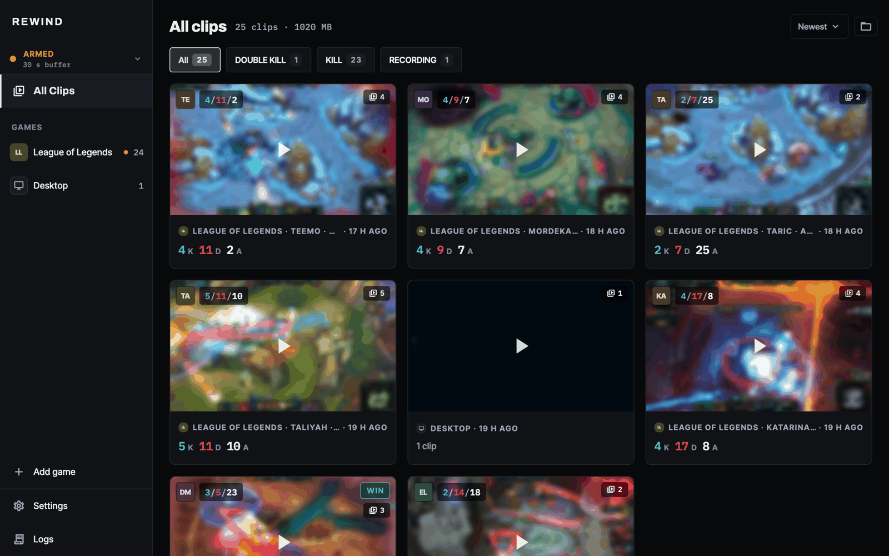
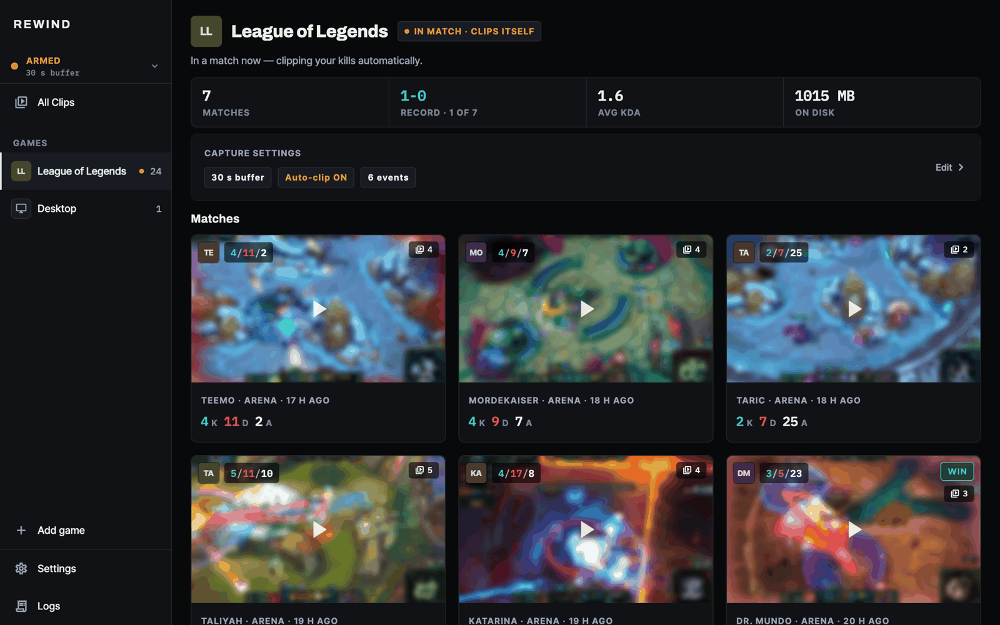

Instant replay for macOS & Windows. It's already recording — press a key and keep the last 30 seconds.


On Windows, players have NVIDIA Instant Replay and Medal. On macOS almost none of that exists — the few tools that do are manual-only, with no idea what's happening in your game. Rewind is one open-source app that does both, on both platforms, built on libobs (the engine behind OBS Studio).
Rewind runs entirely on your own machine. There is no account, no server, no telemetry, and no monetisation. It makes no calls to Riot's web API and uses no API key.
For League of Legends it reads only Riot's official Live Client Data API
on 127.0.0.1:2999 — which exists for exactly this purpose, is
read-only, and is local to your PC. It uses that to know when you got a
kill (so it can save that clip) and to show your own match summary: champion,
items, K/D/A and CS. Champion and item art come from Riot's public
Data Dragon static data.
Rewind never reads game memory, never injects into or hooks the game, and never touches network traffic — the things that get players banned. Games without an official data source simply get manual hotkey capture, which is always safe.